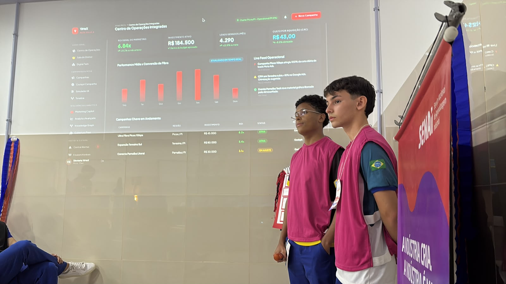
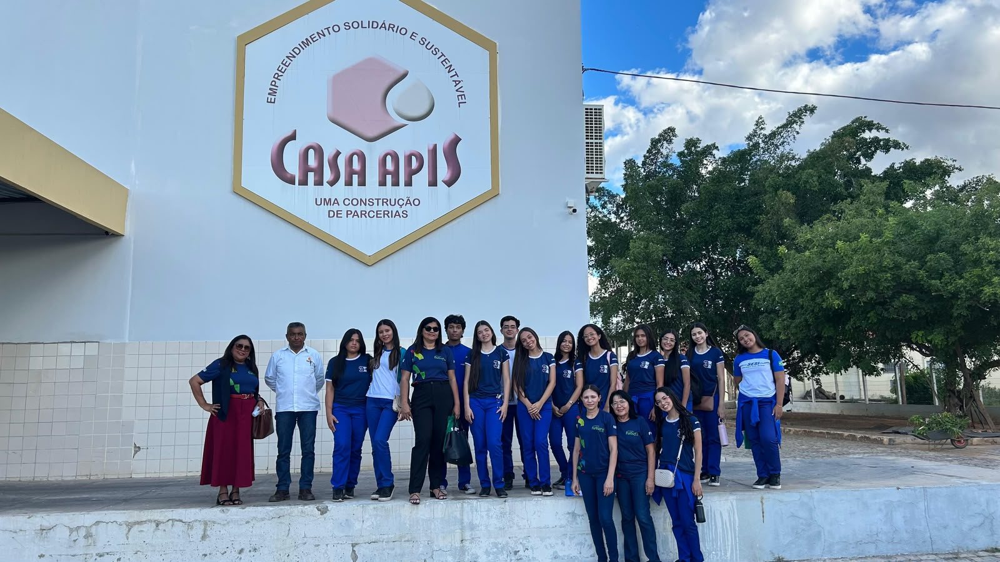
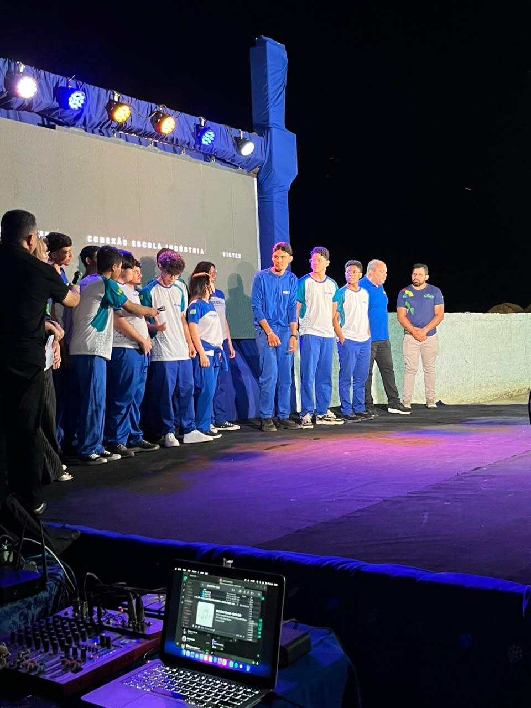
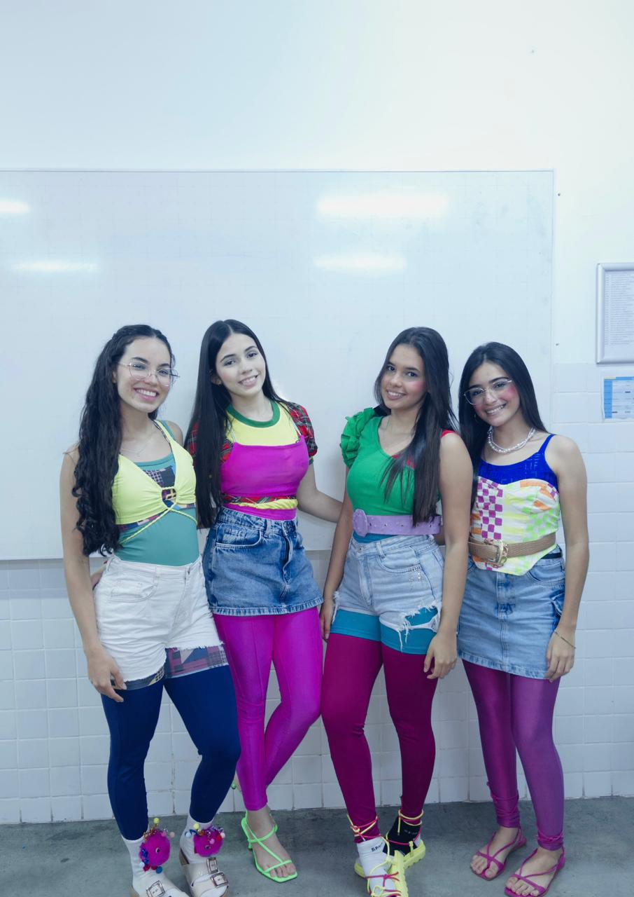

Anexos
Aqui estão registrados os principais eventos, projetos, atividades e momentos especiais vivenciados durante o meu ano escolar.

Grand Pix
Meu processo de aprendizado

Visita a casa APIS
Pequenas e grandes vitórias

Conexão Indústria
Lugares e momentos especiais
Livro na Caixa
Companhia que faz diferença

Primeiro trote
O que gosto de fazer
Segundo trote
Pessoas importantes na minha história

V Mostra Científica
Meus planos para o futuro

Interclasse
Coisas que fazem parte de mim
Currículo
Conheça minha formação, habilidades, experiências e conhecimentos desenvolvidos ao longo da minha trajetória.
Ver Currículo →Considerações Finais
Uma reflexão sobre minha trajetória, meus aprendizados, desafios e conquistas durante o ano escolar.
Ler Considerações →Referências
Fontes, pesquisas, materiais e referências utilizadas para a construção dos trabalhos apresentados.
Ver Referências →